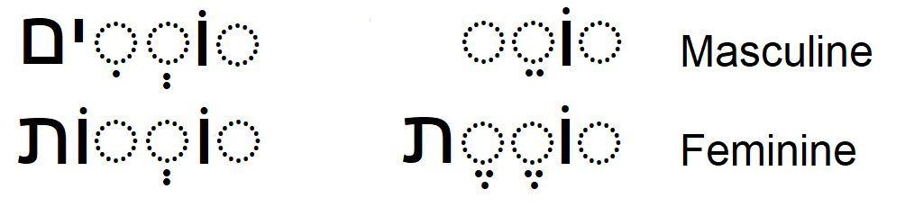
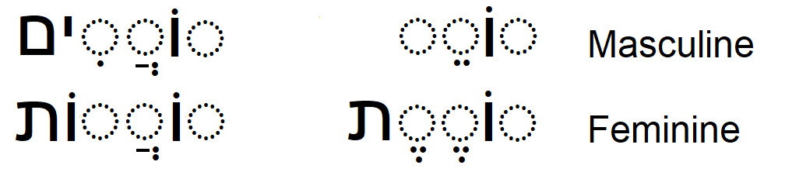
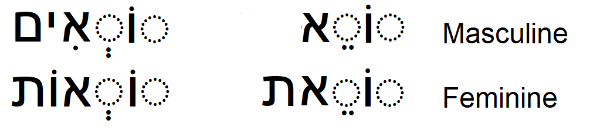
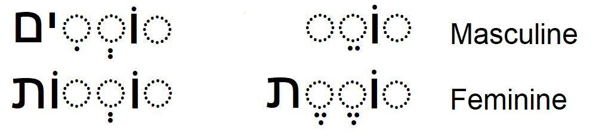
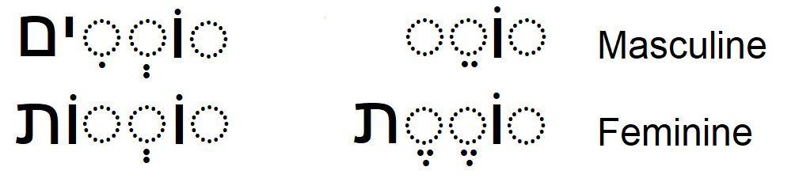

Main references:
"Ha-Yesod Fundatamentals of Hebrew"
by Luba Uveeler & Norman M. Bronznick
"Modern Hebrew Verbs Step By Step"
by Rut Avni
"501 Hebrew Verbs"
by Shmuel Bolozky, Ph.D.
PA'AL Binyan
בִּנְיָןפָּעַל
The verb form called the present tense (הֹוֶה) in modern Hebrew was originally used
only as a present participle consequently אני לומד, for example, has the following
possible translations:
I learn, I do learn, and I am learning in addition to I am a learner.
The proper translation of Hebrew depends more heavily on context than does English.
There is no Hebrew present tense equivalent for the verb "to be". Nor is there an
indefinite article, so in order to say something like David is a teacher in Hebrew
you would say:
.דוד מורה
literally, David teacher.
However, the personal pronoun is often added for emphasis in third person narratives.
For example,
.דוד הוה מורה (David is a teacher. Literally, David he teacher)
Most Hebrew verbs have a three letter root (שׁוֹרֶשׁ), to which are added prefixes, infixes
and suffixes when they are conjugated.
The present tense does not inflect in first, second or third person so therefore it has
only four forms:
masculine singular, feminine singular, masculine plural and feminine plural
The simplest form of verbs are of the binyan (בִּנְיָן) pa'al (פָּעַל)(do, make) also called קָטַל
or קַל (easy).They show simple actions that are always active and may be transitive
(takes a direct object) or intransitive (action is complete without taking a direct object).
The present tense conjugation of regular verbs of this binyan is illustrated below.
The three root letters, or radicals, are represented by:
Plural Singular

As an example, the three letter root for the Hebrew word meaning learn or study is
למד
Conjugated
>לוֹמֵד לוֹמְדִים לוֹמֶדֶת לוֹמְדוֹת
The present tense of the verbs whose middle radical is a guttural (א, ה, ח, ע).
Plural Singular

The three letter root for the Hebrew word meaning ask or borrow is
שׁאל
Conjugated
שׁוֹאֵל שׁוֹאֲלִיםשׁוֹאֶלֶת שׁוֹאֲלוֹת
The three letter root for the Hebrew word meaning laugh is
צחק
Conjugated
צוֹחֵק צוֹחֲקִיםצוֹחֶקֶת צוֹחֲקוֹת
The present tense of verbs whose third radical is an "א".
Plural Singular

Only feminine singular is irregular.
As an example, the three letter root for the Hebrew word meaning read or call is
קרא
Conjugated
קוֹרֵא קוֹראִים קוֹרֵאת קוֹראְוֹת
The present tense of verbs whose third radical is a "ח" or an "ע".
Plural Singular
The three letter root for the Hebrew word meaning takes is
לקח
Conjugated
לוֹקֵחַ לוֹקְחִיםלוֹקַחַת לוֹקְחוֹת
The three letter root for the Hebrew word meaning knows is
ידע
Conjugated
יוֹדֵעַ יוֹדעִיםיוֹדַעַת יוֹדעוֹת
The present tense of the irregular Hebrew verb for lives.
חַי
Plural Singular
חַי חַיִּים Masculine
חַיָּה חַיּוֹת Feminine
The present tense of verbs whose middle radical is a "ו" or a "י".
These two verb forms are referred to as ע"ו and ע"י respectively.
They lose their middle radical as shown below.
The three letter root for the Hebrew word meaning gets up is
קום
Conjugated
Plural Singular
קָם קָמִים Masculine
קָמָה קָמוֹת Feminine
The three letter root for the Hebrew word meaning sings is
שיר
Conjugated
Plural Singular
שָׁר שָׁרִים Masculine
שָׁרָה שָׁרוֹת Feminine
 Plural Singular

As an example, the three letter root for the Hebrew word meaning learn or study is
למד
Conjugated
>לוֹמֵד לוֹמְדִים
לוֹמֶדֶת לוֹמְדוֹת
Plural Singular

As an example, the three letter root for the Hebrew word meaning learn or study is
למד
Conjugated
>לוֹמֵד לוֹמְדִים
לוֹמֶדֶת לוֹמְדוֹת